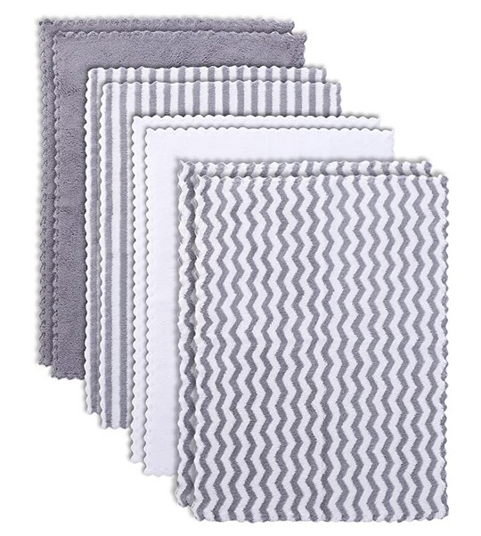

Favorite Baby Products
When you’re a mom you are always trying to find the best baby products. Things that make life easier, things that occupy your kids, things that will keep them happy so you can take that 10-minute shower all to yourself, etc. With so many things on the market it can be so overwhelming. You can look at all the baby sites and see all the reviews but what is really going to work and be valuable to you is subjective to every family and parent. I remember when I was pregnant with my first child and trying to research all of the things. I would spend hours researching what was the best travel system, best swing, best crib, and the list could go on forever. I also had to think about my budget because baby stuff can be so expensive. I was so surprised that there were swings that could cost up to 500 dollars. There was no way I was affording that.
There are cool niche products like a changing table that weighs your baby, swings that do a different kinds of bounces and jumps, a bassinet that moves whenever your baby cried, but what I found at least for me and my family was that I didn’t need to spend thousands and thousands and that simple things like a regular bassinet that attached to my bed, a swing that just swung in two directions, etc. were my favorite. So, for those mamas out there that don’t have millions to spend on all the coolest gadgets I hope my list helps to narrow down what you might like and hopefully you love these products as much as I do.
Graco Modes Travel System
I love my Graco Modes Stroller and car seat combo. It has held up throughout all my kids and I use my stroller for everything. They have updated it, but you can see the version I have if you click the link above. This stroller is a modular stroller, and it was such a great price. I love that the seat can recline and turn into a bassinet. I like that I can have baby facing me or away. I like that the car seat can click right in. It has so much storage and cleans well. This also has a 50-pound weight limit on the seat which is amazing. The car seat it came with is light and easy to use. One thing to keep in mind is that this is only a single rider so if you are going to have children close together you may want a single to double like the mockingbird stroller. If I had to think of one negative this would be it but I knew that when I bought it and I still love it.
Ubbi Diaper Pail
If you jump on any mom forum and ask about diaper pails you will get a range of answers and it won’t help you at all. This is so subjective to all families, but I have had that Ubbi diaper pail for my first and still use it, so let me tell you all the reasons I love it. It holds the smell in really well. I get to use my own trash bags and don’t need to spend a ton on specialty trash bags, which is a major plus for me. For me personally it holds a weeks’ worth of diapers, so I only have to take it out when the garbage is picked up. Now I do have a few cons, but the pluses outweigh these for me so keep that in mind. When you open it, it does release a dirty diaper odor, but it subsides quickly. It was fairly expensive at 75 dollars but now that I have been able to use it for so long the price isn’t bad at all. All in all, I would buy it again and it makes it, so I don’t have to walk down stairs to my garage every time I need to throw away a diaper.
Burp Clothes
 Burp clothes are so essential for me when having a baby. I used them for everything, spit up, drool, etc. Now I did not purchase these but actually made a bunch for my first which we still use for him and my second child. I will be making some more for this baby as well. They are super simple to make but you can find these at any baby store as well.
A Swing
We have a Graco swing which I absolutely love. My babies have loved it as well and it was the only way I could get anything done with having two kids. It moves side to side or back and forth, so it was really nice. The seat removes and turns into a bouncer which saves me space and I didn’t have to purchase a whole separate item, which was a plus. The whole cover is removable which makes it very easy to wash. It has held up for almost 6 years so I would definitely recommend this swing to anyone.
A Good Wrap
With my first I just had a baby carrier and could not even use it well when he was a newborn plus, he hated it. With my second I go the Solly baby wrap and I have loved that this so much I got a second. I loved that I could have him close to me and that he was secure. He loved it as well. It lasts forever. I mean if I really tried, I could totally still wrap my two-year-old in it. For me I had no issues learning the technic, but this can be a challenge for some parents. It can sometimes get a little warm, but the fabric is so thin, so you cool quickly as well. It can be a bit expensive for a piece of fabric but was worth the money. I would recommend this to all new parents. My son always fell asleep in this and was comfortable and I loved this.
Arm's Reach Co-Sleeper
I love my Arms Reach Co-sleeper. It attaches to my bed which makes it perfect for nighttime feeds while breastfeeding. It folds up so you can take it with me when I travel or just fold it up for storage when baby gets too big. I have been able to use it for quite a while with each of my kids. They now have one that the mattress moves to the bottom, and I would recommend getting that one, so it lasts even longer. I have no cons on this one as well.
Swaddle Blankets
Swaddle blankets are a must have for those first several months. They are so nice to have as your kids get older as well to use as a thin blanket in the car. I used two different ones with my second. I used the Aden and Anais muslin swaddles for each of my kids and love them. They make a really nice thin blanket for the car, and we still use them. I like that they had tons of patterns, so it fit the need for gender neutral but still being cute. They are soft and big, so it makes it easy to wrap your baby up.
The second kind I used were sleeper ones. It would hold him in tighter than the other swaddles, so I didn’t have to worry about it becoming loose. It also was cloth. This is not one I can use as a blanket later, so it is only for sleep, but I loved them. They grew with my son, and I would totally recommend getting some that are just for sleep like these.
A Nursing Pillow
For me because I was breastfeeding a nursing pillow was a must. I liked the much thicker ones as it gets me some leverage. The one I got it even has a more cushioned side and a firmer side which I love the options. It helps to hold the baby up and give you at least one free arm. There are so many out there, so you just need to find the one that works for you, but I found this one to be the best for my situation.
A Breast Pump Plus Supplies
If you plan to breastfeed a good breast pump is a necessity, at least it was for me. For my first I used the Medela Pump in Style and I really liked it, no complaints. It emptied the milk really well and it was a great size for travel. For my second I used the Spectra S2, and I love that pump. Comparing the two I would say to get the Spectra I found it worked really well, was quiet and had more modes to get the milk to express. It was awesome. The S2 is one that you need to plug in so I would recommend upgrading to the S1 if you don't want to be constantly tethered to the wall. In both of these cases my insurance covered them so I would speak with insurance first before going out and buying them. I would also recommend a Haakaa breast pump as well. It is a manual pump, but it helped me so much this first few months while my supply was leveling out. It can be attached to the opposite breast while breast feeding as well and catch the let down which was a must for me. I would use it while driving to camping trips to help with engorgement and there are also ways that it can be useful to clear clogged ducts.
Other supplies I would recommend are breast pads. For me they are a life saver. Good nipple ointment until you and baby are more settled into a routine. I would recommend asking your doctor for the Newman’s ointment as it was a lifesaver for my second pregnancy. My first I used the lanolin and liked it, but it wasn’t cutting it the second time for me. A good bag for your pump and supplies was a lifesaver for me as well. Storage bags for your pumped milk. I like the Lansinoh ones, but everyone is different. Obviously, you will need bottles as well, but every baby likes something different my first loved the Playtex vent Aire or really any kind we gave him and my second would hardly take any bottle I tried. So, this will be trial and error for each kid.
A Good Baby BathTub
This one is subjective to each family as well, but I hated filling up my big bathtub when we would only probably use half of that. For me a baby tub was a must. I have the skip hop whale tub and have used it for both of my kids. I love that I can put baby in it, and it has a sling. It was so nice to not have to worry about filling a big tub of water and only getting the water we needed. It also allowed me to be able to have them in a good position for washing. I could use it on the counter if I wanted and it was super easy to empty. We have also used this to give my kids milk baths and loved the ability to keep them more contained for a while. It also hangs to store so it was never in my way when I didn’t need it.
I could go on and on with more products that I love but I will end there for now. What products were a must have for you as a parent? What did you absolutely hate that you purchased? Leave your response in the comments below. I would love to hear from you.